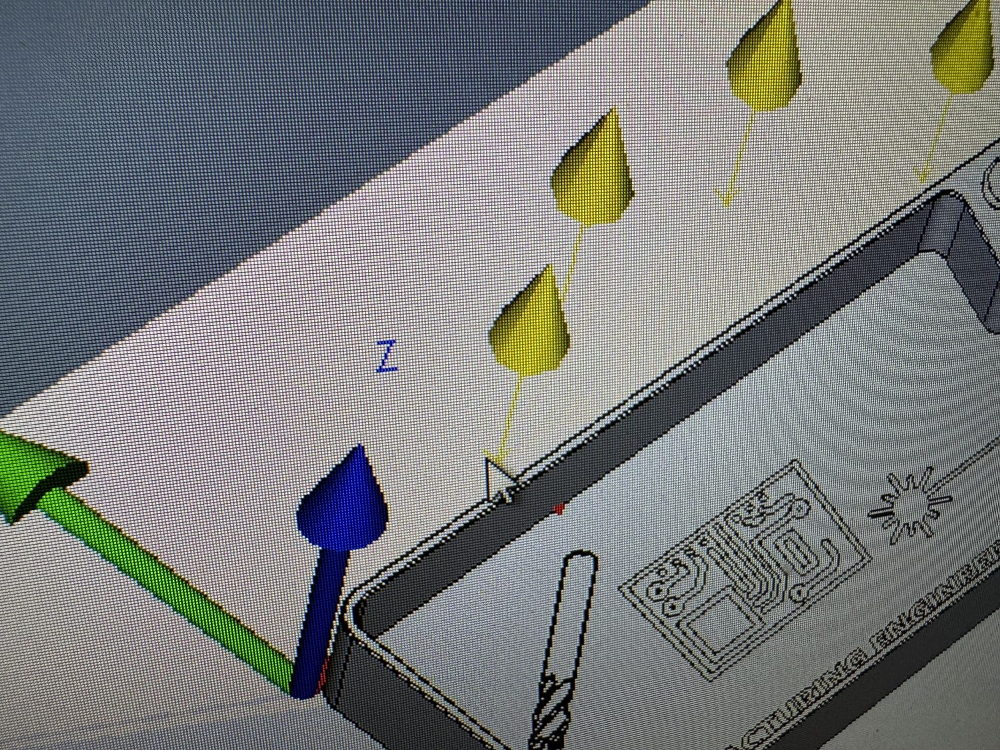

Overview
Project Story
I programmed the Zeiss Duramax CMM for use in Cal Poly IME 335 CNC 1 first article inspection. The inspection needed to verify GD&T requirements on a machined part while handling non-traditional geometry, including a complex contoured ramp. The work focused on repeatable datuming, reliable probing strategy, and clear operator communication. I authored a standard operating procedure that explained safe machine operation, part setup, datum simulation, and common troubleshooting steps for student users.
